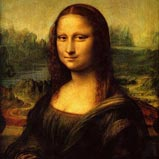
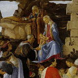
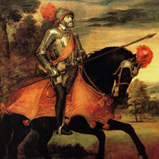
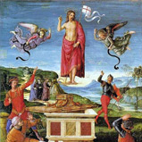

Trong lịch sử , các nghệ sĩ trở nên nổi tiếng , hoặc cho phong cách độc đáo của họ hoặc các nhân vật họ chảy vào thế giới của nghệ thuật . Bắt đầu với Era Renaissance , nghệ thuật đã được chuyển đổi , nó cao giá trị của nghệ thuật và sản xuất một sự tôn trọng từ xã hội mà không có trong quá khứ . Thạc sĩ nghệ thuật trở nên nổi tiếng khắp nơi, công việc của họ đã được nghiên cứu trong và ngoài cuộc đời của họ . Sau thời kỳ Phục hưng , đổi mới và khác nhau của trường phái tư tưởng đã diễn ra và các nghệ sĩ và công việc của họ tự tách mình ra khỏi mọi thời đại từ bao giờ. Đối với những bức tranh tốt nhất của mọi thời đại, xem các bức tranh nổi tiếng nhất.
Dưới đây là danh sách những nghệ sĩ nổi tiếng nhất của mọi thời đại và công trình của họ
Thời kỳ Phục Hưng
   